유아동 가구는 전도 사고 방지를 위해 벽 고정 브라켓 설치가 필수입니다. M4×16 (벽 고정) 4ea와 벽 고정 브라켓 2ea 사용. 인계 전 반드시 부착.
양문형 — 부품
| 부품 | 스펙 | 수량 |
|---|---|---|
| ⓐ 뒷판 | 764×1124×18 | 1 |
| ⓑ 이동형 선반 | 763×408×18 | 1 |
| ⓒ 앞판 (좌·우) | 398×1142×18 | 2 |
| ⓓ 측판 (좌·우) | 460.5×1124×18 | 2 |
| ⓔ 옷봉 | — | 1 |
| ⓕ 지판 | 800×460.5×18 | 1 |
| ⓖ 천판 | 764×442×18 | 1 |
| 미니픽스 / M8 볼트 / 반댐퍼 경첩 / PVC 발통 / 손잡이 | 15 / 7 / 4 / 4 / 2 | |
양문형 설치 단계
조립 순서: 뒷판 → 천판 → 측판 → 지판 → (리프트블록) → 앞판 → 이동형 선반
-
뒷판 + 천판 + 측판
뒷판과 천판을 미니픽스 3 set으로 결합. 양 측판을 미니픽스 12 set으로 결합.
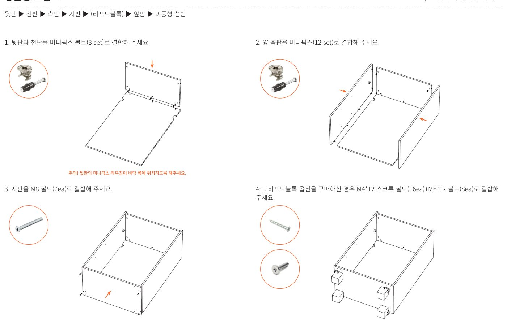
⚠️ 뒷판 하우징 방향뒷판의 미니픽스 하우징이 바닥 쪽에 위치하도록.
-
지판 결합
지판을 M8 볼트 7ea로 결합.
-
(옵션) 리프트블록 또는 PVC 발통
리프트블록 옵션 있음 — M4×12 스크류 16 + M6×12 8로 결합
리프트블록 없음 — PVC 발통 4ea를 M4×12 스크류 8로 결합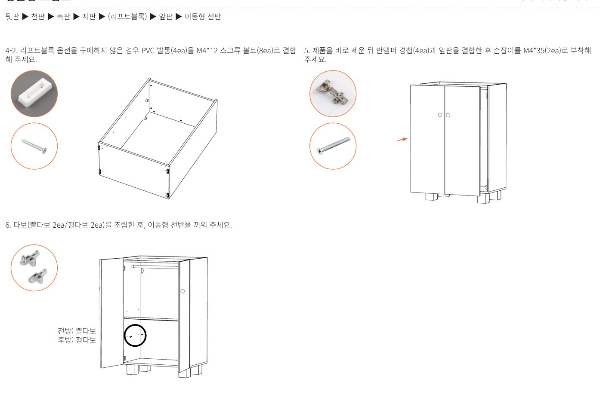
-
제품 세움 + 반댐퍼 경첩 + 앞판
제품을 바로 세운 뒤 반댐퍼 경첩 4ea로 앞판을 결합. 손잡이를 M4×35 2ea로 부착.
-
다보 + 이동형 선반
다보(뿔다보 2 + 평다보 2)를 조립하고 이동형 선반을 끼움.
📐 다보 위치전방 = 뿔다보 / 후방 = 평다보. 헷갈리지 않도록 주의.
-
벽 고정 브라켓 (★ 필수)
벽 고정 브라켓 2ea를 M4×16 4ea로 벽에 고정. 전도 방지를 위해 반드시 시공.
서랍형 — 간단
| 부품 | 수량 |
|---|---|
| 본체 (800×1142×480) | 1 |
| 벽 고정 브라켓 | 2 |
| 손잡이 + M4×35 볼트 | 5 + 5 |
| 리프트블록 (옵션) + M4×12 + M6×12 | 4 + 16 + 8 |
-
(옵션) 리프트블록
옵션 선택 시만 M4×12 스크류 16 + M6×12 8로 결합.
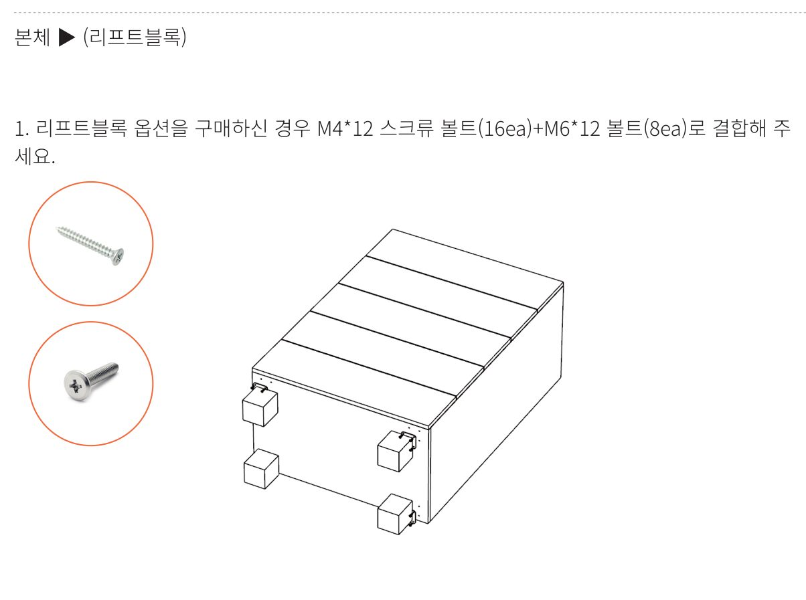
1 / 2 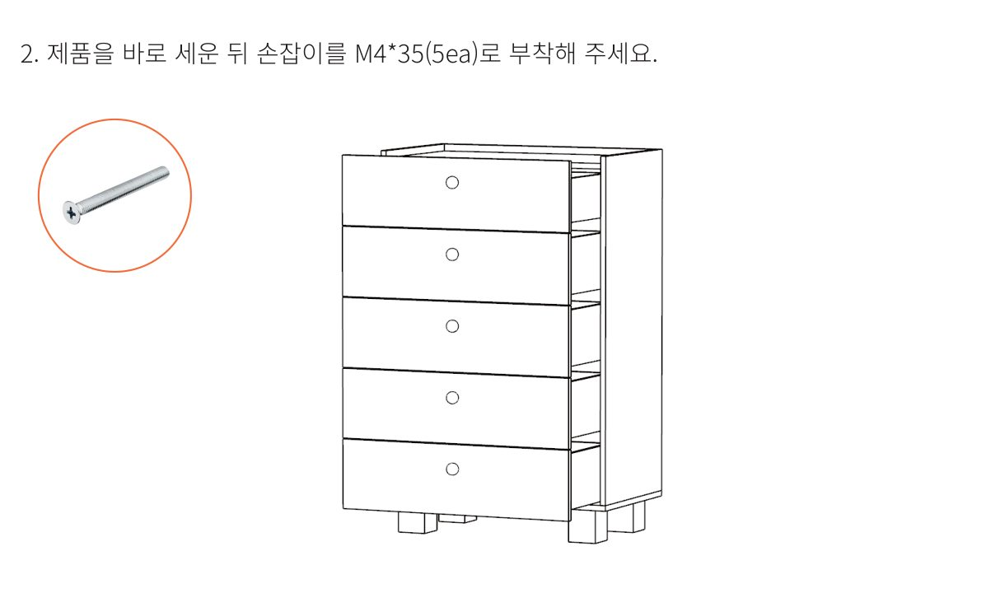
2 / 2 -
손잡이 부착 + 벽 고정
제품을 바로 세운 뒤 손잡이를 M4×35 5ea로 부착. 벽 고정 브라켓 필수 설치.
1 / 2 2 / 2
📐 전체 원본 도면 (PDF)
각 단계 위 이미지가 작거나 자세히 보고 싶을 때는 아래 페이지를 클릭하여 확대하세요. (총 10 페이지)
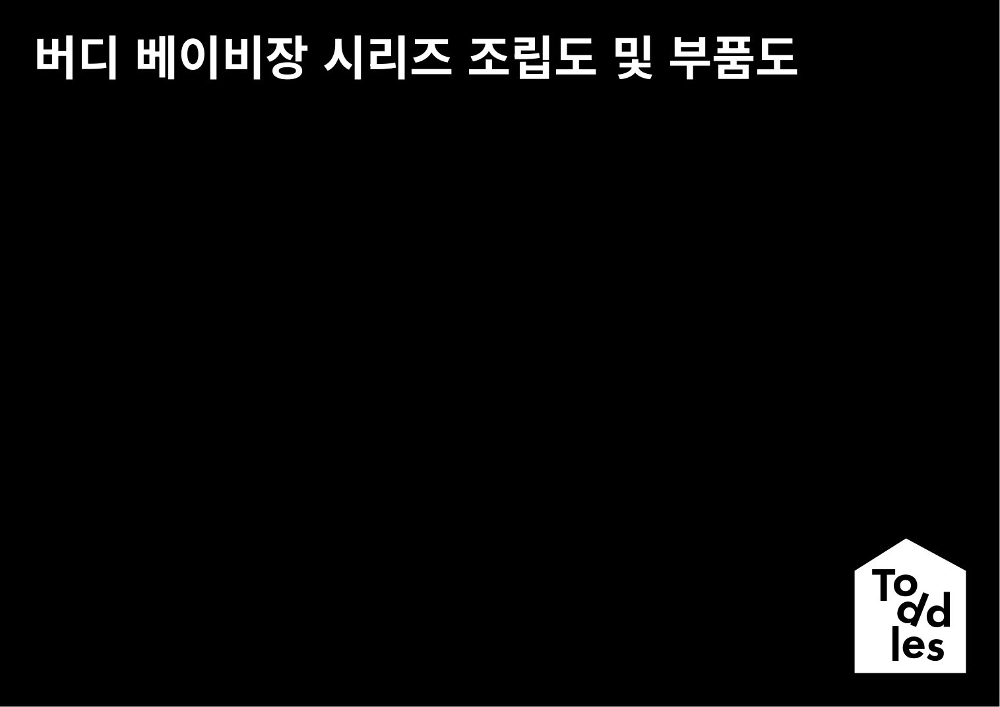
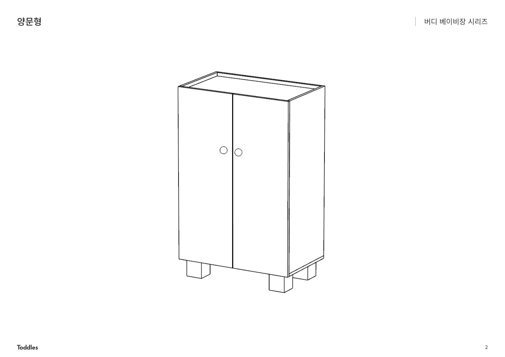
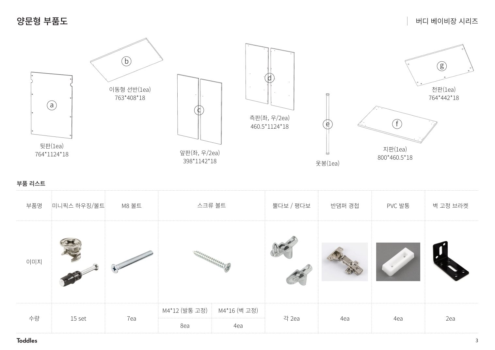
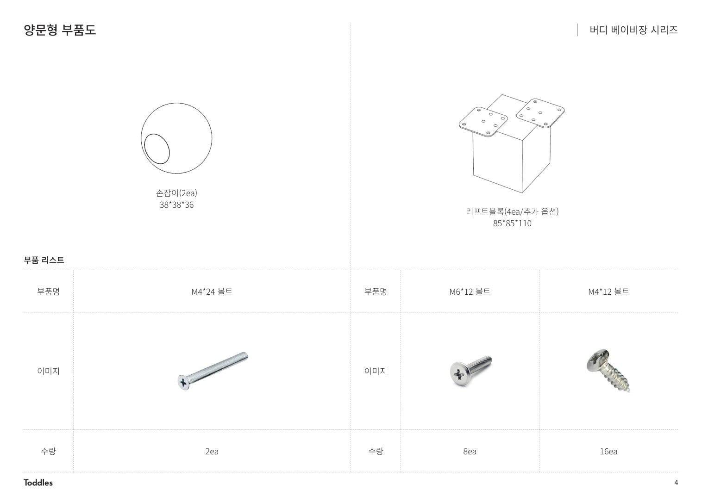
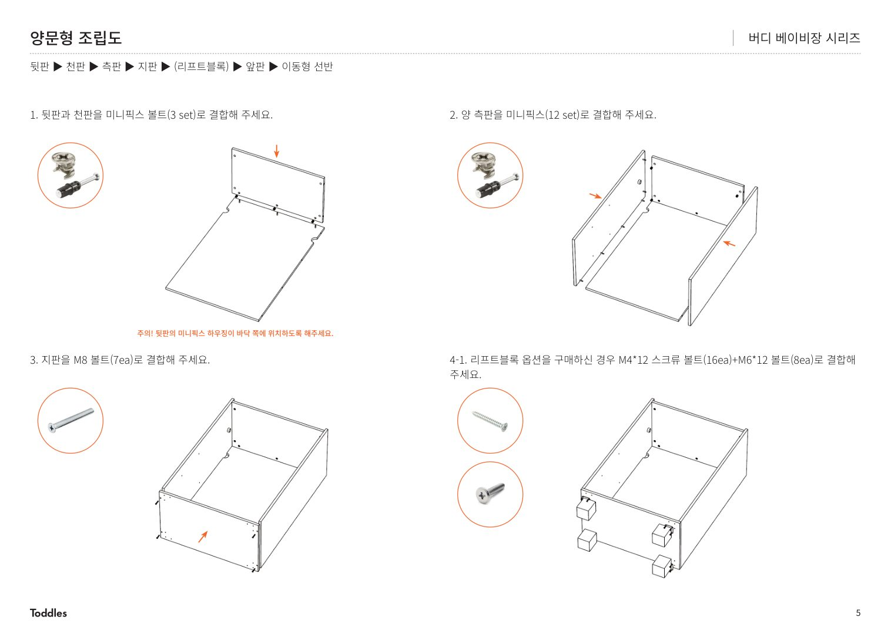
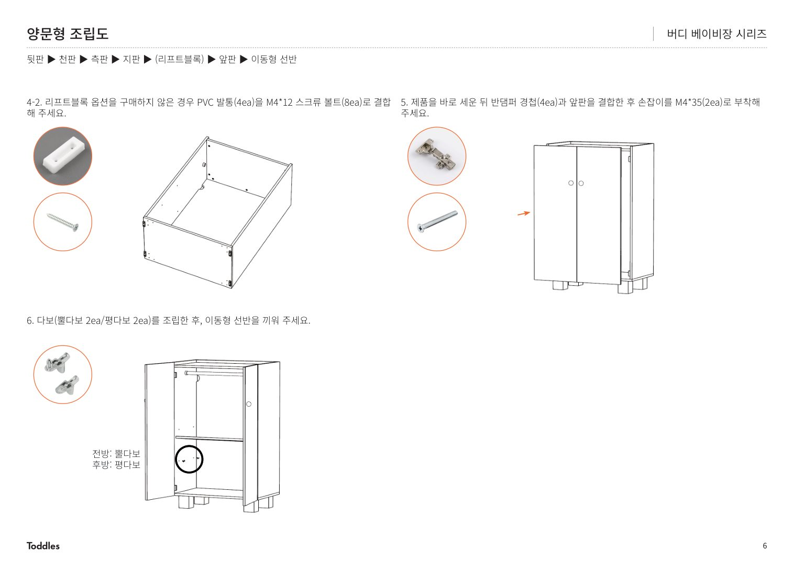
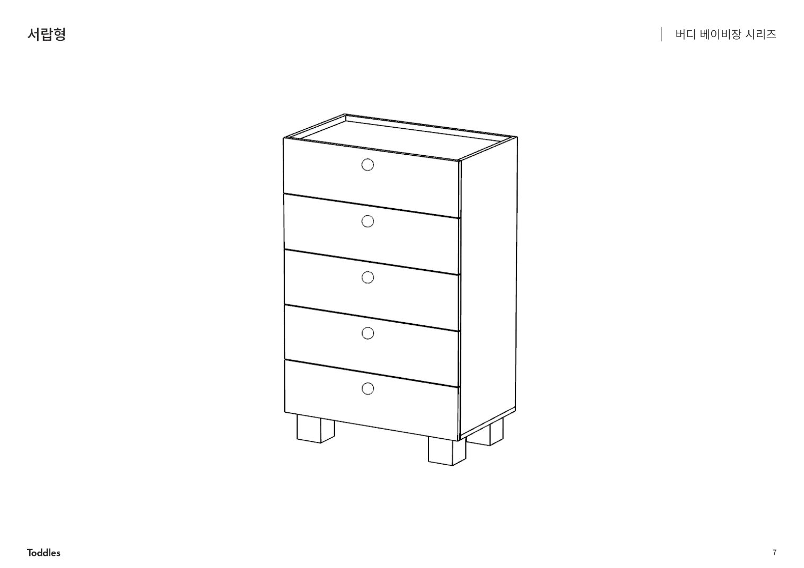
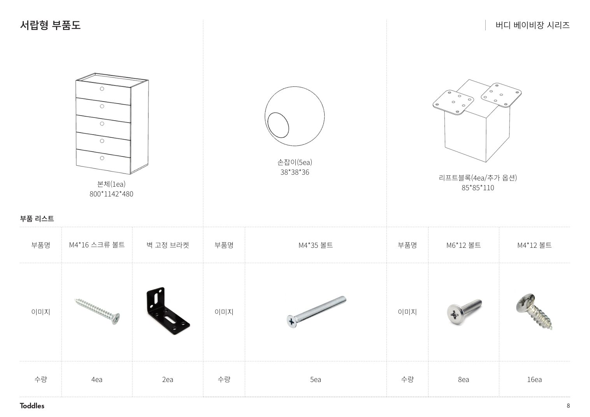
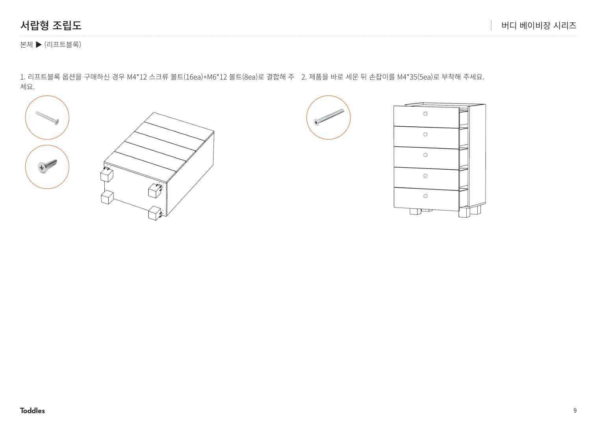